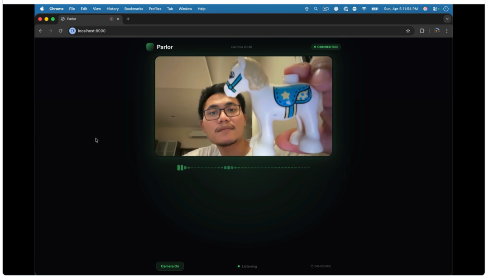
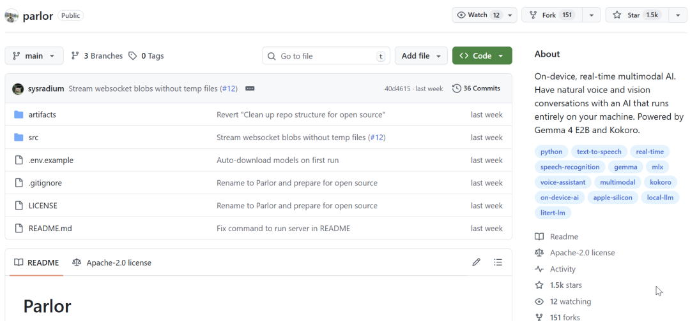
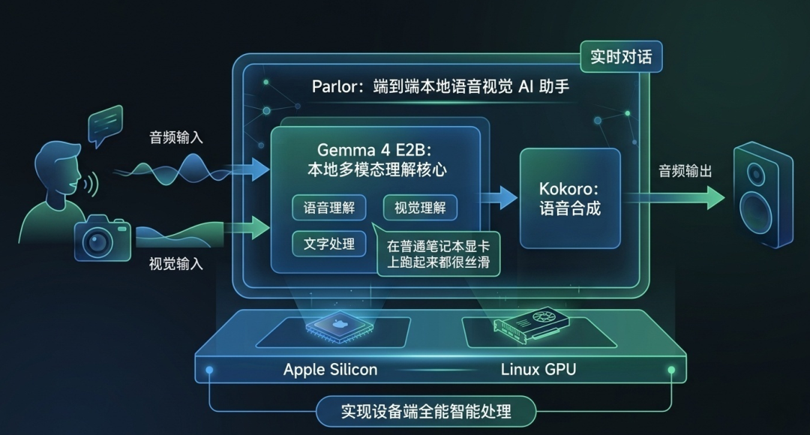
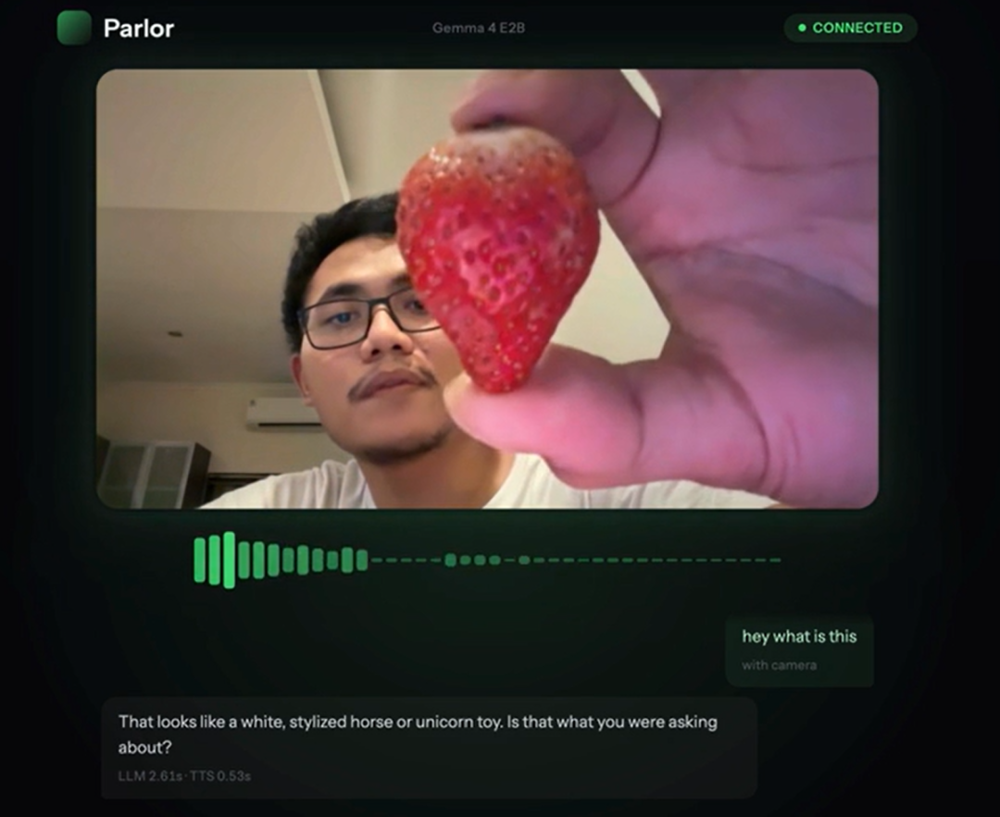
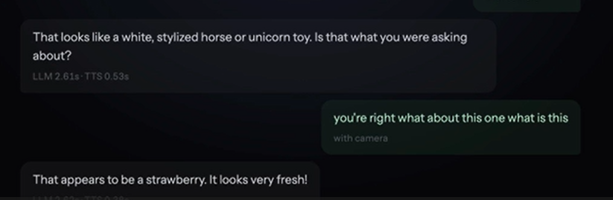
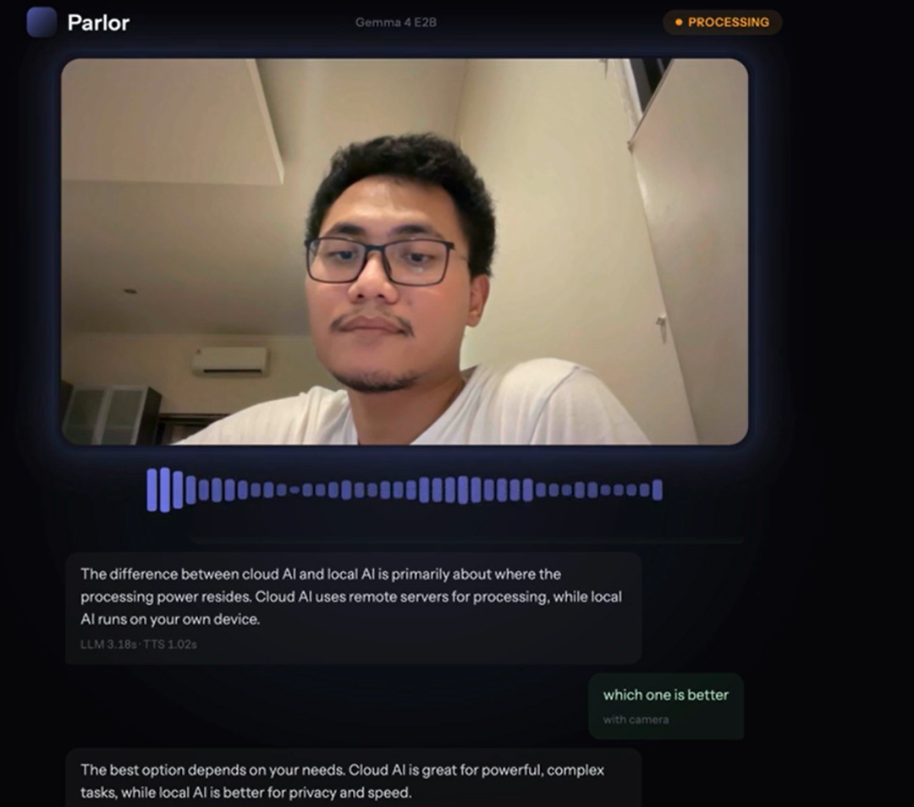
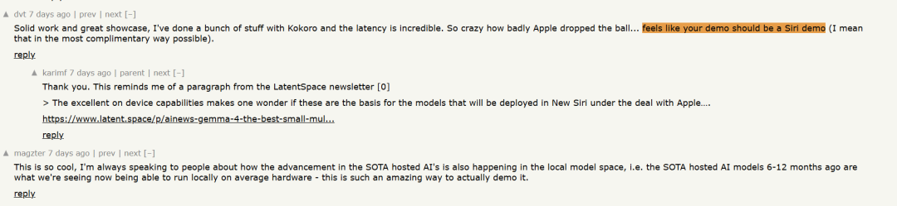
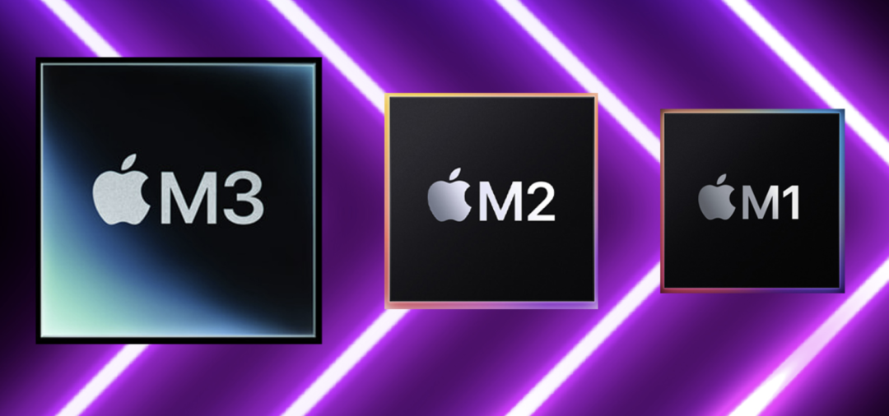
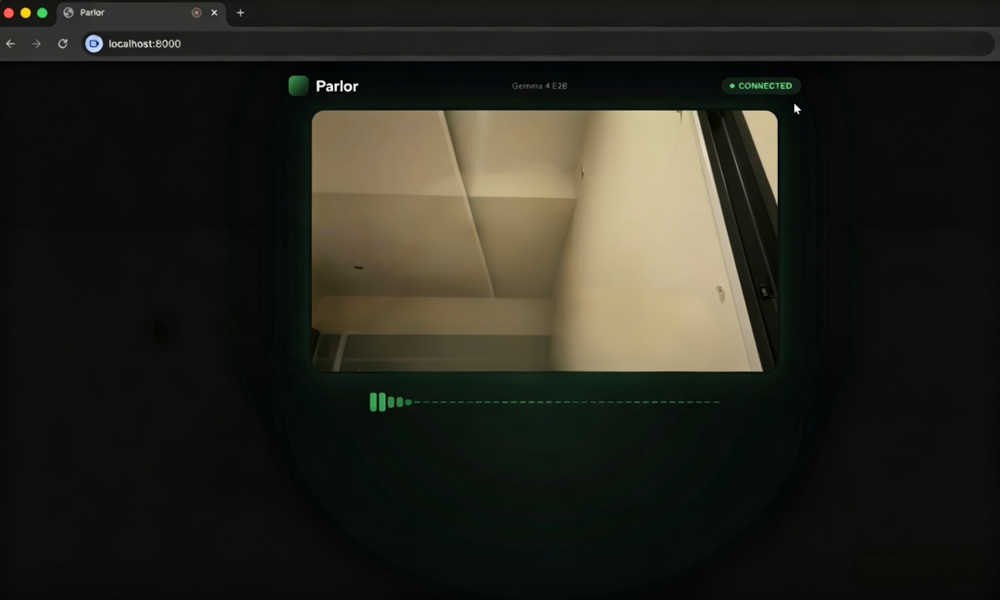

OpenAI 几年前演示的那个指着物体对话的语音 AI，你觉得什么时候能在自己电脑上跑起来？
我原本以为还得等几年，或者至少得有一张 RTX 4090。
结果最近在Github看到一个项目，直接在 MacBook 上就实现了, 只要打开浏览器，对着麦克风说话，摄像头拍着画面，AI 实时理解并语音回复。

关键的是，完全跑在本地。不需要云端，不需要 API Key，不需要订阅。
这个项目叫 Parlor，来自印尼开发者 Fikri Karim。9 天冲到 1.5K Star。

一句话说清楚：Parlor 是一个端到端的本地语音视觉 AI 助手，用 Gemma 4 E2B（专门给本地设备做的小模型，语音、图片、文字全能处理，在普通笔记本显卡上跑起来都很丝滑）做语音和视觉理解，用 Kokoro 做语音合成，在 Apple Silicon 或 Linux GPU 上实现实时对话。

它要解决的是两个很具体的痛点：「成本」和「隐私」。
想用 OpenAI 的 GPT-4o Voice Mode？得付 $20/月，而且对话数据会上传云端。
想用 Siri 或 Google Assistant？免费，但同样要上传数据，而且功能有限。
Parlor的思路是把所有计算搬到本地。没有服务器成本，没有数据泄露风险，没有订阅门槛。
开发者之前做了个叫 bule.ai 的免费英语口语练习平台，已有数百月活用户。他一直在思考怎么保持免费且可持续。
答案就是把算力从云端搬到用户设备上。
6个月前作者还要靠RTX 5090显卡，才能让语音模型实时跑起来。
现在一个M3 Pro芯片就够了，比硬件升级快多了。
它的核心能力可以拆成三块。
「多模态融合」

你一边说话摄像头能同步拍画面，AI 可以同时听懂你的话、看懂你指的东西。比如你指着桌上的水果问“这个怎么吃”，它能结合你说的话和看到的画面直接回答。

技术上就是浏览器先把声音和画面录下来，通过 WebSocket 传到本地服务器，再用 Gemma 4 E2B 一起处理。
「中途可以随意打断」
以前我们用语音助手，必须等它把话说完你才能开口，现在用 Parlor 可以随时打断。
AI 正在回复的时候，你一说话它立马停住，专心听你讲，对话特别自然，再也不是你一句、它一句的死板聊天了。
「整句语音合成，边说边播」

它会把回复拆成一句一句来生成语音，不用等整段话都做完才开始播放，延迟感明显小很多。跑在苹果 M3 Pro 上，从头到尾的延迟大概 2～3 秒，虽然比云端方案慢一点，但日常用完全没问题。还有Gemma 4 支持多语言，可以在单次对话中混合使用。多语言混合的效果比预期的好。
Parlor 还在 Hacker News 上引发了一些讨论。

有人说，feels like your demo should be a Siri demo，翻译一下，这应该是 Siri 的演示。
还有人提到一个真实场景，我一直在找一个能在车间用的语音助手。戴着口罩手套，没法解锁手机。请先解锁你的 iPhone在这种时候简直是灾难。
这些讨论表明本地语音助手不是啥花里胡哨的技术，而是大家在实际用的时候真的需要。
看到这你想本地试试。
安装门槛不算高，但有几个前提条件需要注意。
最重要的运行平台，推荐用macOS Apple（M1/M2/M3芯片）或者 Linux GPU ，注意Windows 暂不支持。

由于项目是用Python写的，Python版本必须用 3.12，3.13 或更高版本会安装失败，这个坑很多人踩过一定要注意。
还有安装过程要用到git，uv工具，注意提前安装。
下面是具体步骤，跟着做就行。
打开终端，把代码下载下来。
git clone https://github.com/fikrikarim/parlor.git
下载完成后，进入项目目录：
cd parlor/src
继续在src目录下运行：
uv sync
这一步会把项目需要的所有依赖都下载好。
最后启动服务：
uv run server.py
第一次启动会自动下载模型，需要几分钟，下载完后就可以离线用了，不用每次都下载。
看到终端显示服务启动成功后，打开浏览器访问 http://localhost:8000，授权摄像头和麦克风，就能开始对话了。

当然，Parlor 目前是 Research preview，官方说明是Expect rough edges and bugs。
几个已知的限制也要说一下，它不支持 agentic coding（E2B 模型不适合代码代理任务）；没有持久化对话历史，会话结束就丢失；不支持工具调用或 Function Calling。
延迟方面，2-3 秒的端到端响应比云端方案慢，但对口语练习这类场景够用了。
写在最后
Parlor 的意义不在于它有多强，而在于它展示了端侧 AI 的可能性。
六个月前需要 RTX 5090，现在 M3 Pro 就够。再过一年，可能手机就能跑。到那时，OpenAI 几年前演示的指着物体对话的场景，就能在每个人口袋里实现。
而且，它是免费的。不需要订阅，不需要 API 费用，不需要担心数据上传。
对于想练英语口语、想体验本地语音 AI、或者单纯对端侧多模态感兴趣的开发者，值得花时间试试。
开源地址：https://github.com/fikrikarim/parlor
既然看到这了，欢迎随手点赞、在看、转发，也可以给我个星标⭐，接收最新的文章，我们下期见！